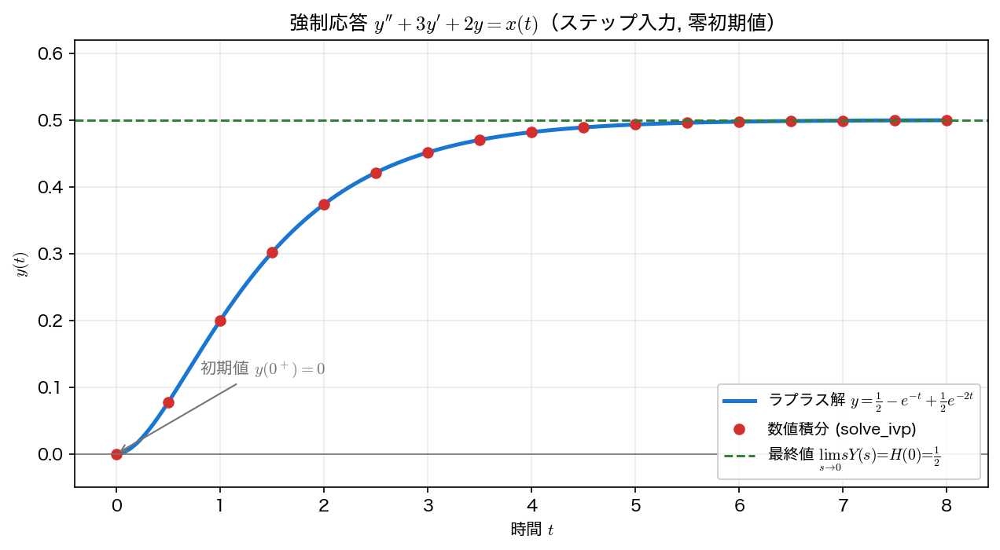

ラプラス変換の公式
ここまでで、定義・逆変換・畳み込み・伝達関数とラプラス変換の道具がそろった。本ページでは 公式（定理）を一覧に整理 し、とくに逆変換せずに波形の 始端と終端 を読む 初期値定理・最終値定理 を扱う。これらは、システムの定常値や立ち上がりを素早く見積もるのに役立つ。
公式（定理）の総まとめ
第6回の表に 畳み込みと \(t\) 倍 を加えて、よく使う公式をまとめておく（すべて \(t\ge0\)、\(F(s)=\mathcal{L}[f(t)]\)）。
| 公式 | 時間領域 | s 領域 |
|---|---|---|
| 線形性 | \(a f(t)+b g(t)\) | \(aF(s)+bG(s)\) |
| s 推移（減衰） | \(e^{-at}f(t)\) | \(F(s+a)\) |
| 時間推移（遅延、\(\tau\ge0\)） | \(f(t-\tau)u(t-\tau)\) | \(e^{-\tau s}F(s)\) |
| スケーリング（\(a>0\)） | \(f(at)\) | \(\dfrac{1}{a}F\!\left(\dfrac{s}{a}\right)\) |
| 微分（1 階） | \(f'(t)\) | \(sF(s)-f(0)\) |
| 微分（2 階） | \(f''(t)\) | \(s^2F(s)-sf(0)-f'(0)\) |
| 積分 | \(\displaystyle\int_0^t f(\tau)d\tau\) | \(\dfrac{F(s)}{s}\) |
| 畳み込み | \((f*g)(t)\) | \(F(s)\,G(s)\) |
| \(t\) 倍 | \(t\,f(t)\) | \(-\dfrac{dF(s)}{ds}\) |
最後の \(t\) 倍の公式 \(\mathcal{L}[t f(t)]=-F'(s)\) は、たとえば \(t e^{-at}\) のような信号の変換に使える（\(F(s)=1/(s+a)\) を \(s\) で微分して符号を反転すると \(1/(s+a)^2\)）。これらの公式を組み合わせれば、ほとんどの実用的な信号は積分を実行せずに変換できる。
表のうち 時間推移 と スケーリング に付けた条件（\(\tau\ge0\)、\(a>0\)）は、片側変換が \(t<0\) の情報を捨てていることによる。\(\tau<0\) や \(a<0\) とすると、正の時間の値が負の時間の値を参照してしまい、この形にはならない（第6回の ラプラス変換の定義と収束 参照）。
初期値定理・最終値定理
逆変換して \(f(t)\) を求めなくても、\(F(s)\) から波形の 始端 \(f(0^+)\) と 終端 \(f(\infty)\) だけを直接読み取れる。これが 初期値定理（Initial Value Theorem） と 最終値定理（Final Value Theorem） である。
直観的には、\(s\to\infty\)（高周波）は時間波形の 立ち上がりの瞬間 を、\(s\to0\)（低周波・直流）は 十分時間が経った定常状態 を覗く操作にあたる。ただしどちらの定理も 無条件には使えない。
初期値定理の適用条件
初期値定理が使えるのは、(i) 右極限 \(f(0^+)\) が 有限な値として存在 し、(ii) \(f\) の原点に インパルス成分がなく（\(F(s)\) が厳密プロパー。\(\lim_{s\to\infty}sF(s)\) が有限）、(iii) \(f\) と \(f'\) のラプラス変換が存在するときである。たとえば \(F(s)=\dfrac{s}{s+1}\) は \(f(t)=\delta(t)-e^{-t}\) に対応し、\(\lim_{s\to\infty}sF(s)=\infty\) となって定理の形では始端が読めない。
最終値定理の適用条件
\(F(s)\) が有理関数の場合、最終値定理が使えるのは \(sF(s)\) の極がすべて左半面にある（虚軸上・右半面に極がない）ときに限る。たとえば \(F(s)=1/(s^2+\omega^2)\)（持続振動 \(\sin\omega t/\omega\)）は \(sF(s)\) が虚軸上に極をもち、\(t\to\infty\) で値が定まらないので最終値定理を適用してはいけない。形式的に \(\lim_{s\to0}sF(s)=0\) と計算できても、それは正しい極限ではない。発散・振動が続く系では使えない、と覚えておく。
この「極を見る」判定は有理関数だからこそ使える便法である。むだ時間 \(e^{-\tau s}\) を含む式など 非有理 の \(F(s)\) では、極以外の特異性がありうるし、そもそも \(\lim_{t\to\infty}f(t)\) が存在するかどうかを別途確かめる必要がある。本講義で扱う \(F(s)\) はすべて有理関数なので、上の判定で足りる。
簡単な例 \(Y(s)=\dfrac{1}{s(s+1)}\) で確かめる。これは \(y(t)=1-e^{-t}\) に対応し、\(y(0^+)=0\)、\(y(\infty)=1\) になるはずである。
import sympy as sp
t = sp.symbols("t", positive=True) # s は複素変数なので仮定を付けない
s = sp.symbols("s")
Y = 1 / (s * (s + 1))
print("y(t) =", sp.inverse_laplace_transform(Y, s, t))
print("初期値 y(0+) = lim s->oo sY =", sp.limit(s * Y, s, sp.oo))
print("最終値 y(inf) = lim s->0 sY =", sp.limit(s * Y, s, 0))
逆変換した \(y(t)=1-e^{-t}\) は確かに \(y(0)=0\)、\(y(\infty)=1\) で、定理の結果と一致する。逆変換せずに \(sY(s)\) の極限を取るだけで始端・終端が読めている。
応用：強制応答の定常値
最終値定理が最も役立つのは、強制応答の定常値（DC 利得） を求める場面である。次の微分方程式を、入力 \(x(t)\) をステップ \(u(t)\)、初期値をすべて \(0\)（零初期値）として解く。
零初期値でラプラス変換すると \((s^2+3s+2)Y(s)=X(s)\) となるので、伝達関数は
ステップ入力は \(X(s)=1/s\) だから、\(Y(s)=H(s)/s=\dfrac{1}{s(s+1)(s+2)}\)。最終値定理を使えば、逆変換する前に定常値が
とわかる。（系が安定で定常値が存在するなら）ステップ応答の定常値は伝達関数の DC 利得 \(H(0)\) に等しい。ここでも「安定なら」が効いている。たとえば \(H(s)=\dfrac{1}{s-1}\) は \(H(0)=-1\) だが、極 \(s=+1\) が右半面にあるためステップ応答 \(e^{t}-1\) は発散し、\(-1\) には収束しない。\(H(0)\) を定常値と読んでよいのは、\(sY(s)\) の極がすべて左半面にあると確かめたあとである。実際に逆変換と数値積分でも確かめる。
import numpy as np
import sympy as sp
from scipy.integrate import solve_ivp
t = sp.symbols("t", positive=True) # s は複素変数なので仮定を付けない
s = sp.symbols("s")
# y''+3y'+2y = x(t), x=u(t)（ステップ）, 零初期値
H = 1 / ((s + 1) * (s + 2)) # 伝達関数
Y = H / s # ステップ入力 X(s)=1/s
print("apart:", sp.apart(Y, s))
print("y(t) =", sp.expand(sp.inverse_laplace_transform(Y, s, t)))
print("最終値 lim s->0 sY =", sp.limit(s * Y, s, 0))
print("DC 利得 H(0) =", H.subs(s, 0))
# 数値積分で検証
def rhs(tt, z): # z=[y, y'], 入力 x=1
return [z[1], 1.0 - 3 * z[1] - 2 * z[0]]
tm = np.linspace(0, 8, 9)
num = solve_ivp(rhs, [0, 8], [0.0, 0.0], t_eval=tm,
rtol=1e-10, atol=1e-12).y[0]
ana = 0.5 - np.exp(-tm) + 0.5 * np.exp(-2 * tm)
print("最大誤差:", f"{np.max(np.abs(num - ana)):.2e}")
apart: 1/(2*(s + 2)) - 1/(s + 1) + 1/(2*s)
y(t) = 1/2 - exp(-t) + exp(-2*t)/2
最終値 lim s->0 sY = 1/2
DC 利得 H(0) = 1/2
最大誤差: 1.95e-12
逆変換した解 \(y(t)=\dfrac{1}{2}-e^{-t}+\dfrac{1}{2}e^{-2t}\) は、\(t\to\infty\) で \(e^{-t},e^{-2t}\to0\) より \(\dfrac{1}{2}\) に収束し、最終値定理および DC 利得 \(H(0)=\dfrac12\) と一致する。数値積分とも \(\sim10^{-12}\) の範囲で一致している（この差は丸め誤差ではなく数値積分の誤差で、rtol／atol の指定で大きさが変わる。第6回の 逆ラプラス変換と s 平面 参照）。

まとめ
- ラプラス変換の公式（線形性・推移・微分・積分・畳み込み・\(t\) 倍）を使えば、ほとんどの信号は積分せずに変換できる。
- 初期値定理 \(f(0^+)=\lim_{s\to\infty}sF(s)\)、最終値定理 \(\lim_{t\to\infty}f(t)=\lim_{s\to0}sF(s)\) で、逆変換せずに波形の始端・終端が読める。初期値定理は \(f(0^+)\) が有限で原点にインパルス成分がないとき、最終値定理は（有理関数なら）\(sF(s)\) の極がすべて左半面 のときだけ有効。
- 安定な系では、ステップ応答の 定常値は DC 利得 \(H(0)\) に等しい。強制応答 \(y''+3y'+2y=x(t)\) の定常値 \(\tfrac12\) は、最終値定理・逆変換・数値積分のいずれでも一致する。
本講義との接続
第6回・第7回で、ラプラス変換による システムの記述（伝達関数 \(H(s)\)）と 応答の読み方（極・畳み込み・定常値）がそろった。第8回 では、極がすべて 左半面にあるか で 安定性 を判定する見方（ラウス・フルビッツの安定判別、制御系への応用）に進む。今回の「極の位置 → 過渡応答」「\(H(0)\) → 定常値」という視点が、その土台になる。